Qué es la música
Se conoce como música a la combinación ordenada de ritmo, melodía y armonía que resulta agradable a los oídos. Por su carácter inmaterial, la música se considera un arte temporal o del tiempo, al igual que la literatura.
En el sentido restrictivo, la música es el arte de coordinar y transmitir efectos sonoros, armoniosos y estéticamente válidos, los cuales son generados a través de la voz o de instrumentos musicales.
La música es una manifestación artística y cultural de los pueblos, de manera que adquiere diversas formas, valores estéticos y funciones según su contexto. A la vez, es uno de los medios por el cual un individuo expresa sus sentimientos.
La persona que pone en práctica la música o la ejecuta por medio de un instrumento se llama músico.
Como tal, la palabra música puede usarse en sentido metafórico. Por ejemplo, puede ser empleada en frases coloquiales como:
- Vete con esa música a otra parte”, que quiere decir que la persona despide vehementemente a alguien que la ha importunado.
- Lo que dices es música para mis oídos”, que quiere decir que la persona escucha una noticia que le resulta 'agradable de oír'.
Generos musicales
Un género musical es una categoría que identifica piezas musicales como pertenecientes a una tradición compartida o conjunto de convenciones más o menos aceptadas por una amplia mayoría de expertos en música. Los siguientes son algunos de los muchos que existen en la actualidad
La música clásica
La música clásica es uno de los tipos de música que más se suele asociar con un estilo culto, formal, prestigioso, técnico, refinado y elitista.
La música clásica la solemos ver en grandes orquestas, música de cámara, música coral, ópera... con directores e instrumentistas profesionales, siempre de forma organizada, coordinada y con cierta seriedad y sofisticación.
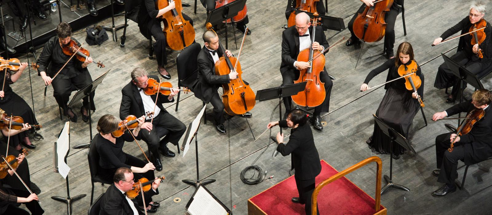La música Jazz
La música Jazz surge en los últimos años del siglo XIX de la combinación del Blues y la música clásica. Este tipo de música es muy dado a la improvisación, y se caracteriza por un gran tratamiento del ritmo, el uso del contratiempo y la síncopa, y la gran popularidad de sus orquestas de Jazz(sobre todo el Big Bang).
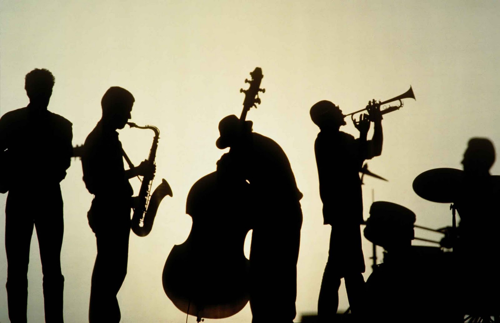La música Soul
Se trata de un género de música de origen afroamericano que surgió en la década de los 50 e influyó en muchos géneros posteriores como el funk o el hip hop. Se trataba de música lenta, profunda y espiritual, de ahí que su traducción literal del inglés sea “alma”.
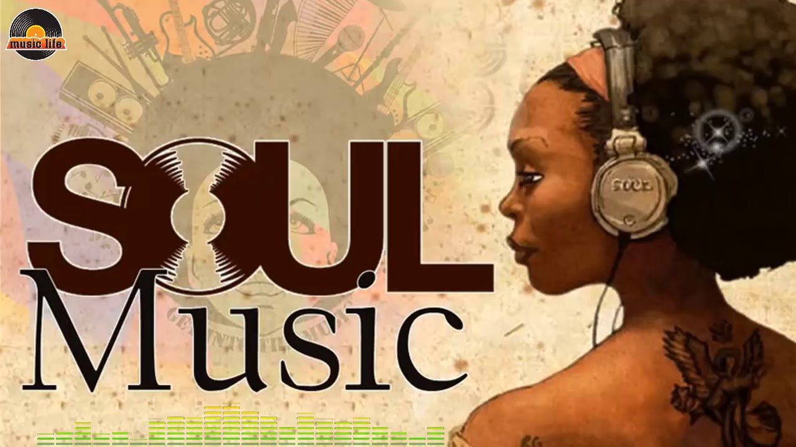La música Blues
Entre los principales tipos de música más populares de los últimos tiempos encontramos el Blues. Su origen se remonta al siglo XIX durante la epoca de esclavitud africana en EEUU, y que mezcla la música africana y la occidental en un mismo género. Dado el contexto histórico en el que se originó, las letras y la esencia de este género musical tienden a tratar el malestar y el desconsuelo personal.
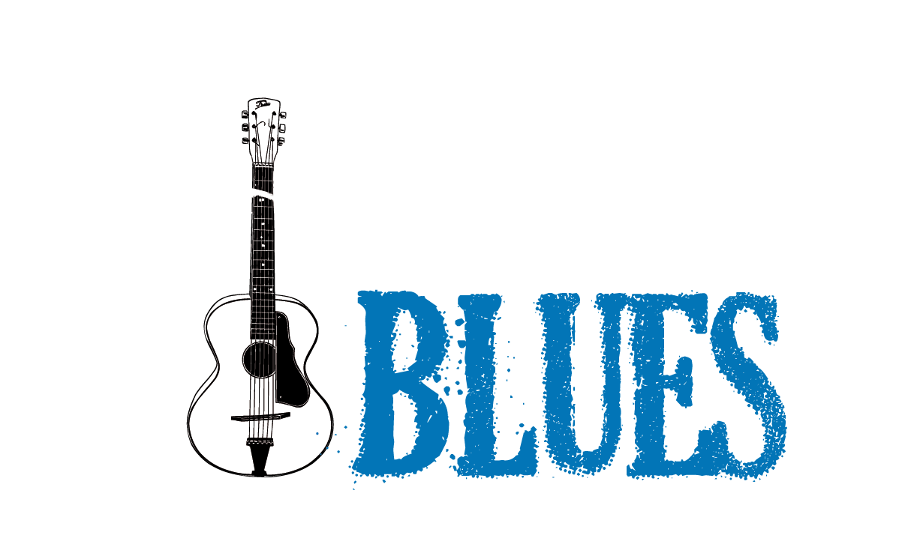Rock
El rock es un vocablo inglés que hace referencia a un género musical de ritmo muy marcado, nacido a partir de la fusión de varios estilos del folclore estadounidense y popularizado desde de la década de 1950.
El concepto original mencionaba al rock and roll como la mezcla del blues, el rhythm and blues, el country y otros estilos. En la actualidad, suele utilizarse el término rock para nombrar a los estilos modernos derivados del rock and roll, quedando éste último concepto para designar al ritmo original que surgió en los ’50.
Instrumentos Musicales
Son objetos que se encuentran conformados por la fusión de uno o varios sistemas resonantes junto a los medios para su vibración, son elaborados con el objetivo de producir sonidos en distintos tonos, y que pueden ser llegados a utilizar por una persona para crear música. Hay quienes defienden la idea de que cualquier cosa que genere sonido puede funcionar como instrumento musical, sin embargo, el término es reservado de manera específica para aquellos objetos que son creados con ese propósito específico.
Guitarra Clasica
La guitarra es un instrumento musical de cuerda pulsada, compuesto de una caja de madera, un mástil sobre el que va adosado el diapasón o trastero generalmente con un agujero acústico en el centro de la tapa (boca), y seis cuerdas. Sobre el diapasón van incrustados los trastes, que permiten las diferentes notas. Su nombre específico es guitarra clásica, guitarra española, guitarra criolla o guitarra acústica.
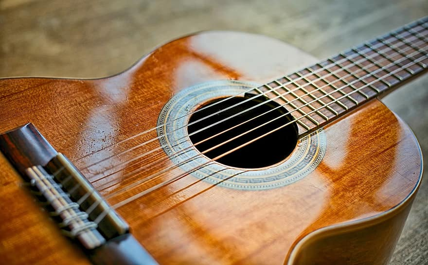Guitarra Electrica
La guitarra eléctrica es un tipo de guitarra en la que, a diferencia de la guitarra clasica, su caja no hace resonancia, por lo que el sonido se produce indirectamente por inducción eléctrica y a través de un amplificador o también a través de un pedal de efectos. El sonido de la guitarra se verá influido especialmente por la madera con la que este construida, por el diseño y ubicación de las pastillas, la escala y en menor medida por el puente y la cejilla, el uso de los círculos de la escala modificará el sonido de cada una de sus cuerdas.
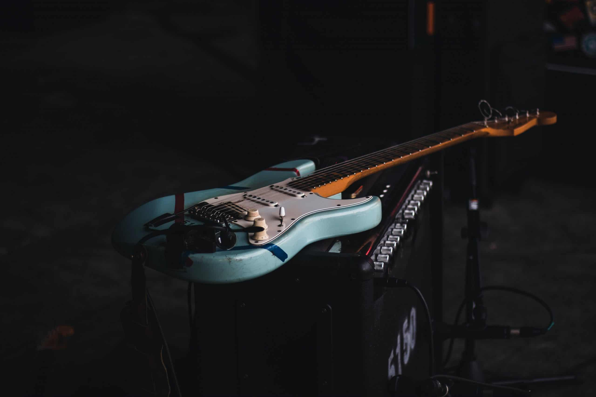Ukelele
El ukelele es un instrumento de cuerda pulsada, utilizado como instrumento principal en la música de las islas Hawái que originalmente tenía cinco cuerdas. Es una adaptación del cavaquinho portugués creada en la década de 1880 en Hawái por inmigrantes portugueses. Posteriormente se difundió por la Polinesia francesa y en la Isla de Pascua con un tallado más rústico, dando lugar al ukelele tahitiano o polinésico
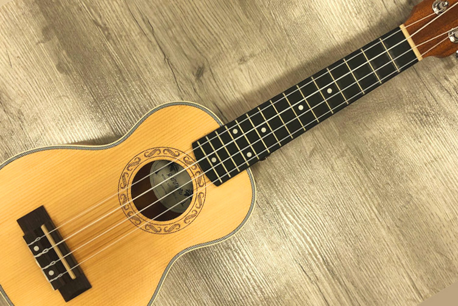Piano
El piano es un instrumento de teclado, de la familia de cuerda percutida, al generar su sonido al golpear sus cuerdas con unos martillos controlados por el teclado. Puede producir acordes y dispone de un amplio registro.
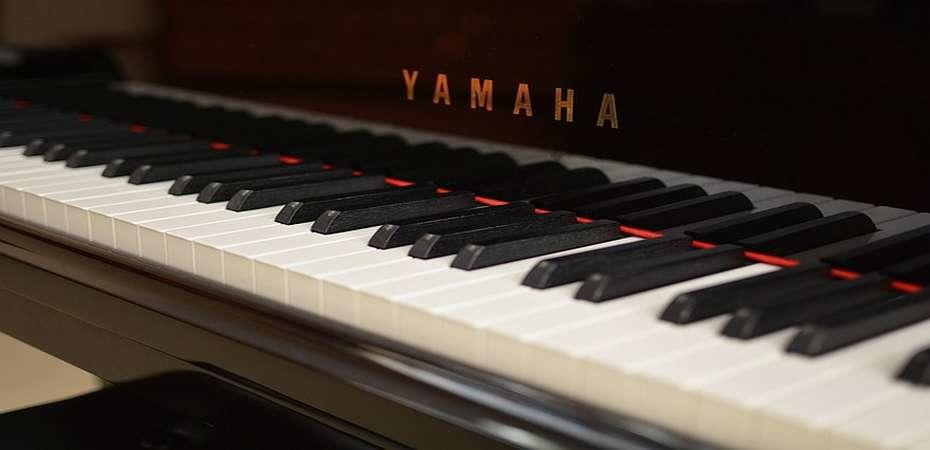Batería
La batería es un conjunto de instrumentos musicales de percusión usado por muchas agrupaciones musicales. En algunos países, el término batería también se refiere al músico que toca estos instrumentos, al igual que el término baterista, ambos equivalentes. Este instrumento nació de la necesidad de producir diferentes percusiones en un solo sistema agrupado y cómodo para ser tocados simultáneamente por una sola persona.
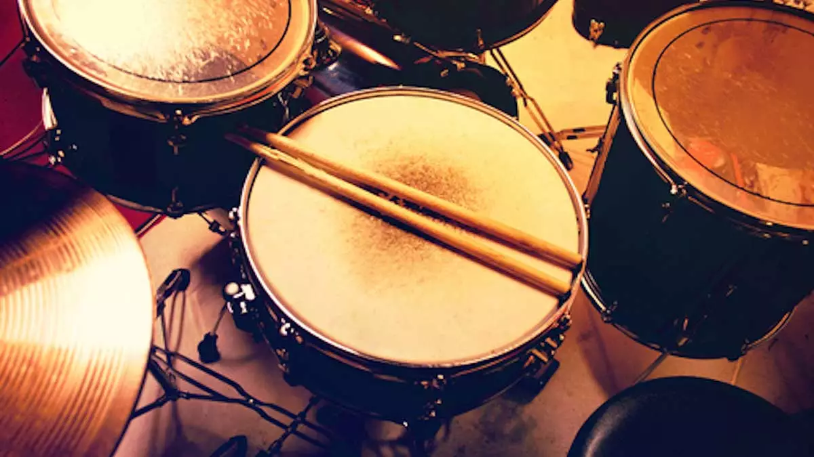Cantantes
El nombre de cantante se utiliza para designar a aquellas personas que se dedican a hacer música a través del uso de la voz, pudiendo hacerlo sin la necesidad de instrumentos musicales aunque en muchos casos estos sirven como acompañamientos. El cantante es un tipo de artista muy popular en la actualidad y debido a la importancia del mercado de la música en nuestros días, el papel del cantante tanto solista como parte de bandas o de grupos musicales es central en el arte actual
Agos Nissi
Su camino a la fama empieza en enero de 2019, cuando Sebastián Yatra replica un video de ella en Twitter haciendo un cover del colombiano. También compartieron sus videos Tini Stoessel y Los Auténticos Decadentes. En muy poco tiempo logra conquistar el corazón de millones de adolescentes.
Solo en el primer mes de publicar sus contenidos, alcanza millones de vistas con sus reversiones de Sebastián Yatra y Pedro Capó convirtiéndose en referencia para chicos y chicas de 10 a 25 años.
Kinox
Rodrigo Martín Moreno mejor conocido como Kinox es un youtuber dedicado al rap que suele variar en contenidos, llevando sus ramas basta videojuegos, animes, bseries, o demás extensiones del ámbito denominado friki.
Tiene alrededor de 85,000,000 de visitas en su canal y 300 mil suscriptores en el tiempo que lleva luchando por su carrera musical que comenzó, el 4 de Agosto del 2012 pero lleva desde los 12 años rapeando.
Luciano Pereyra
Luciano Pereyra nació el 21 de septiembre de 1981 en Luján, Provincia de Buenos Aires. En 1998 grabó su primer disco Amaneciendo, 13 temas entre los que mezcla sonidos de zamba, carnavalito, vals, chacareras y baladas. Su primer hit se llamó Soy un inconsciente, gracias a este sencillo, Luciano vendió 260.000 placas y fue acreedor de cuádruple platino. En 1999 decidió conquistar al público en Buenos Aires presentándose en el Teatro Opera.
Duki
Mauro Ezequiel Lombardo Quiroga, conocido artísticamente como Duki, es un rapero, trapero y compositor argentino, considerado la voz líder de la música trap en Argentina, debido a sus múltiples éxitos con sus sencillos y particulares tonos de su distintiva voz puesta en escena.
Spinetta
Luis Alberto Spinetta fue un cantante, guitarrista, poeta, escritor y compositor argentino, considerado uno de los más importantes y respetados músicos de Argentina, Latinoamérica y del habla hispana por la bcomplejidad instrumental, lírica y poética de sus obras musicales, tanto en sus múltiples agrupaciones y como solista. El gobierno argentino estableció el 23 de enero como "Día Nacional del Músico" en honor a su nacimiento.
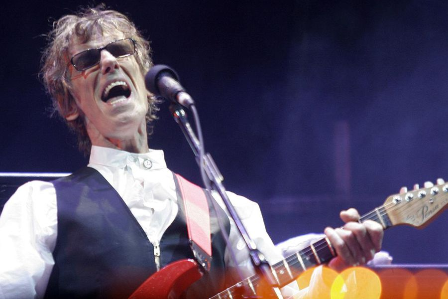Tini
Tini Comenzó su carrera solista con el lanzamiento de su álbum debut, Tini (2016), que incluye los sencillos Siempre brillarás y Great Escape. El álbum fue promocionado con su gira Got Me Started Tour, donde la artista se presentó en distintos estadios de todo el mundo. Su siguiente álbum, Quiero volver (2018), que contiene las canciones Te quiero más, Princesa y Quiero volver.
Gilda
Miriam Alejandra Bianchi (Gilda) fue una cantante y compositora argentina de cumbia. Entre sus canciones más conocidas se encuentran Ámame suavecito, Corazón valiente, Corazón herido, Tu cárcel, Fuiste, etc. Muchos de estos temas han sido versionados por bandas y artistas como Attaque 77, Los Charros, Leo García, Natalia Oreiro, entre otros. Su corta pero exitosa carrera, sumada a su trágica muerte en el apogeo artístico, la convirtieron en un ícono popular argentino.
El Potro
Rodrigo Alejandro Bueno, conocido como el Potro Rodrigo o solamente Rodrigo, fue un cantante argentino de cuarteto. Su estilo estuvo marcado por su carisma y su energía en el escenario. Su pelo corto y teñido y ropa casual diferían de cantantes típicos de cuarteto con colores estridentes y el pelo largo rizado.
Bandas
La característica principal de una banda musical es que los instrumentos deben poder ser tocados mientras los músicos andan. Suelen combinarse instrumentos de viento, de cuerda y de percusión. Pero, como decimos, estos tienen que poder tocarse en marchas o desfiles. De hecho, el nombre de banda hace referencia a la faja o insignia militar que portaban algunos de los músicos que marchaban mientras tocaban.
Por otro lado una orquesta es una compañía de músicos, que con un director, tocan instrumentos de cuerda, viento y percusión. En una orquesta la parte principal del sonido es producido por los instrumentos de cuerda.
Gorillaz
Gorillaz es una banda virtual inglesa creada en 1998 por Damon Albarn y Jamie Hewlett. La banda está compuesta por cuatro miembros ficticios: 2-D, Noodle, Murdoc Niccals y Russel Hobbs. La mayoría de sus canciones junto con todo su universo ficticio, se presentan a través de vídeos musicales animados, de animación tradicional y animación por computadora, entrevistas y pequeños cortos animados.
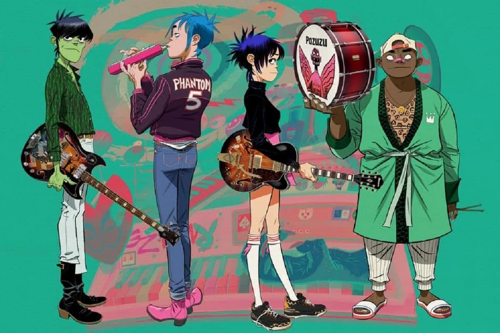Los Palmeras
Los Palmeras es un grupo argentino de cumbia santafesina, originario de la ciudad de Santa Fe. El grupo se fundó en 1969 con el nombre de Sexteto Palmeras. Estaba integrado por Osvaldo Zabala en acordeón, Czeslav "Yuli" Popowicz en voz, Jorge Armando Acosta en bajo eléctrico, Quico Lencinas en guitarra, "Tito" Acosta en timbales y Oscar "Cachito" Ramírez en tumbadoras.
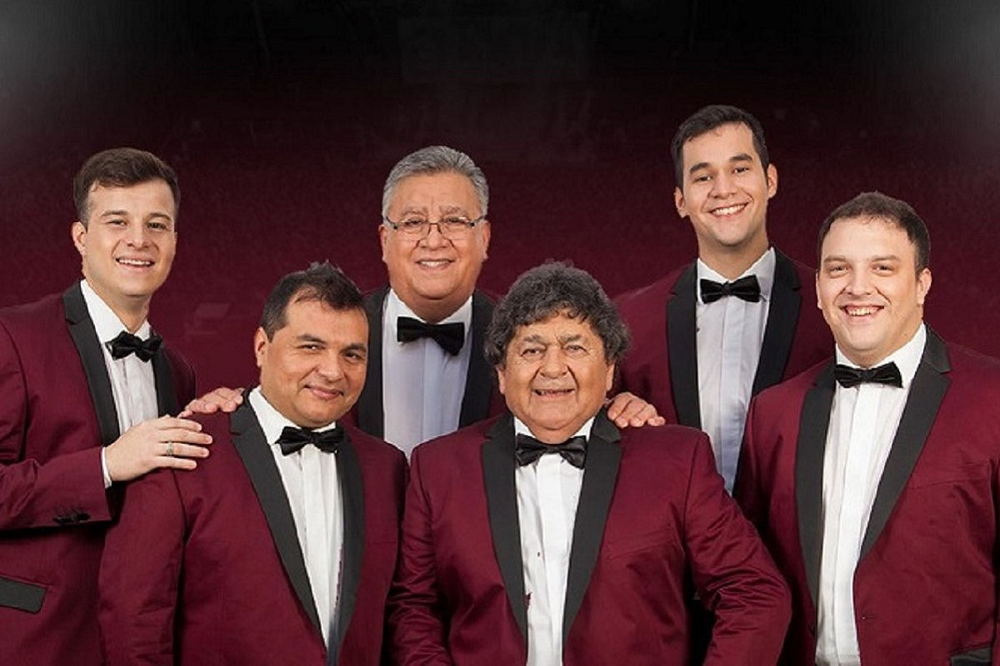Queen
Queen fue una banda británica de rock formada en 1970 en Londres, integrada por el cantante y pianista Freddie Mercury, el guitarrista Brian May y el baterista Roger Taylor. El bajista John Deacon llegaría un año después al grupo para completar la formación clásica. Sus primeros trabajos estuvieron influenciados por el rock progresivo, el hard rock y el heavy metal, pero la banda se aventuró gradualmente en trabajos más convencionales y amigables con la radio incorporando más estilos, como arena rock y pop rock.
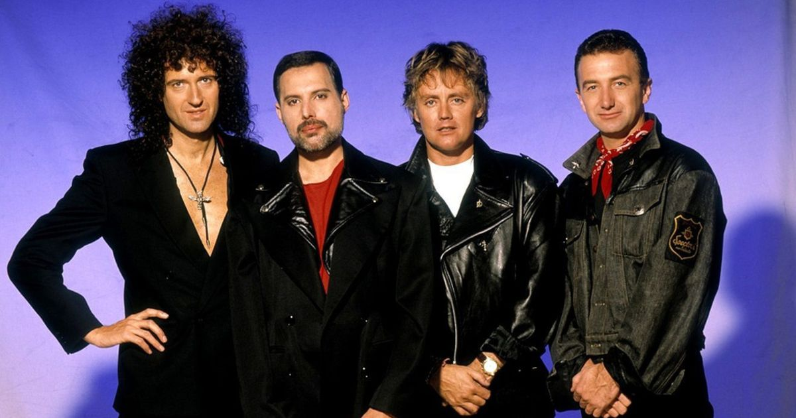Morat
Morat es una banda colombiana de pop latino formada originalmente en Bogotá en 2011. Se dieron a conocer en 2015 con su éxito Mi nuevo vicio. Sus integrantes son Juan Pablo Isaza Piñeros, Juan Pablo Villamil Cortés, Simón Vargas Morales y Martín Vargas Morales. Hasta finales de 2016 había formado parte de la banda Alejandro Posada, pero decidió abandonar el grupo, por lo que fue sustituido por Martín Vargas, hermano de Simón.
Skillet
Skillet es una banda de rock cristiano y metal cristiano originaria de Tennessee, fundada en 1996 y conformada por John, Korey Cooper, Seth Morrison y Jen Ledger. El grupo ha publicado once álbumes de estudio, el más reciente, Dominion, en el 2022. Decidieron nombrar a la banda Skillet, ya que el producto que pretendían desarrollar era "como tirar todo en una 'sartén', y ver que salía".